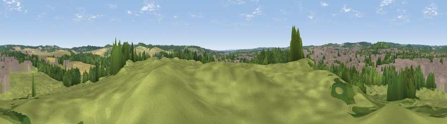

Viewpoint near Hucknall
#37565 in England · top 64% of its area beats it · near Hucknall · access?Where it is
The exact computed spot (SK 54575 49325). Click the marker for map links.
Public access: no public right of way or access land is recorded at this exact spot — it may be on private land. Computed from Natural England's CRoW access layer and OpenStreetMap rights of way — not the legal definitive map. Always verify locally.
The view, rendered

A 360° render of this exact spot computed from the terrain model, tree cover and land cover — summer colours, afternoon light, calibrated against photographs of famous viewpoints. Real trees, hedges and buildings will differ in detail.
The panorama
Grey silhouette: terrain skyline in each direction (720 bearings, Earth curvature and refraction included). Dashed green: skyline with trees (+15 m) and buildings (+8 m) as obstacles. Blue strip: how far the ground is visible on each bearing.
Where the view opens
Wedge length = distance to the farthest visible ground on that bearing (vegetation-aware). Rings at 10, 25 and 50 km.
What fills the view
31% grassland · 30% built-up · 25% woodland · 14% cropland
Angular shares of the visible panorama (visual magnitude), not map area. Landscape diversity 0.59 (0–1 Shannon).
Key numbers
More beautiful places nearby
The staircase of upgrades: each row has a higher view potential than everything closer. Driving times are estimates from straight-line distance, calibrated against real road routing — check an actual route before setting out.
| Place | Direction | Drive | Score |
|---|---|---|---|
| Viewpoint near Hucknall | W · 3 km | ~7 min | 46.9 |
| Viewpoint near Bestwood Village | SE · 4 km | ~9 min | 47.5 |
| Viewpoint near Newstead | NW · 4 km | ~9 min | 53.4 |
| Viewpoint near Arnold | ESE · 5 km | ~12 min | 64.1 |
| No Man's Lane | SW · 15 km | ~27 min | 65.8 |
| The Tors | WNW · 20 km | ~34 min | 68.9 |
| Burstheart Hill [Thoresby Colliery] | NNE · 21 km | ~35 min | 69.3 |
| Crich Stand | WNW · 21 km | ~35 min | 73.0 |
53.03842, -1.18753 · source: screening · position refined by local search. Computed location — check access rights before visiting.